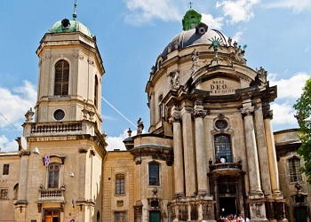

Місто Лева, Леополіс, Лемберг, Львів ... Його вузенькі, сповнені подихом історії вулички, схожі на чудернацькі павутиння. Єдине місто України , що не зазнало значних спустошень та руйнувань на початку двадцятого століття і прославилося завдяки своєму суто європейському стилю
Львів- місто легенд. Тут кожен дворик, кожен будинок та кожна вулиця дихають власними, неповторними легендами, які тягнуться ще з часів Середньовіччя
Місто відоме як осередок художнього, літературного, музичного та театрального мистецтва. Сьогодні незаперечним свідченням культурного багатства міста є велика кількість театрів, концертних залів, творчих об'єднань, а також проведення тут численних мистецьких заходів. Храми, фрески, живопис, традиції, свята, фестивалі – це спадок минулого та витвір сучасного генія, який можна відчути лише у Львові.